The SQL SELECT statement is used to select (retrieve) data from a database table.
Example:
The above SQL query selects the first_name of all the customers from
the Customers table.
The syntax of the SQL Select Statement is:
Here,
- column 1, column 2, .... are the table columns
- table is the table name from we select the data
Example
Here, the SQL command selects the first_name and last_name of all
customers in the Customers table.
To select all columns from a database table, we use "*" character. For example,
Here, the SQL command selects all columns of the Customers table.
A SELECT statement can have an optional WHERE clause. The WHERE clause allows us to
fetch records from a database table that matches specified condition(s). For example,
Here, the SQL command selects all customers from the Customers table with the last_name Doe.
Let's look another example
Here, the SQL command select the age and country columns of all the customers whose country is USA.
We can also use the WHERE clause with the UPDATE Statement to edit existing rows in a database table.
NOTE: In SQL, we must enclose textual data inside either single
or double quotations like 'USA'.
The WHERE clause can contain one or more OR operators.The ORoperator is used to filter
records based on more than one condition, like if you want to return all customers from
Germany but also those from Spain:
The OR operator displays a record if any of the conditions are TRUE.
The AND operator displays a record if all the conditions are TRUE.
Below is a selection from that Customer table used in the examples:
At least One Condition Must Be True
The following SQL statement selects all fields from Customers where either City is
"Berlin", CustomerName starts with the letter "G" or Country is "Norway":
Example:

You can combine the AND and OR operators.
The following SQL statement selects all customers from Spain that starts with a "G" or an "R".
Make sure you use parenthesis to get the correct result.
Without parenthesis, the select statement will return all customers from Spain that starts
with a "G", plus all customers that starts with an "R", regardless of the country value:
Example:
Select all customer that either.
are from Spain and starts with either "G", or
starts with the letter "R"
The SQL AND operator selects data if all condition are TRUE
Example
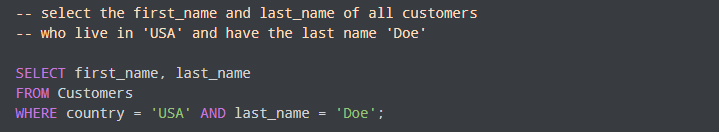
Here, the SQL command selects first_name and of last_name all customers
whose country is USA and last_name is Doe from the Customers table.
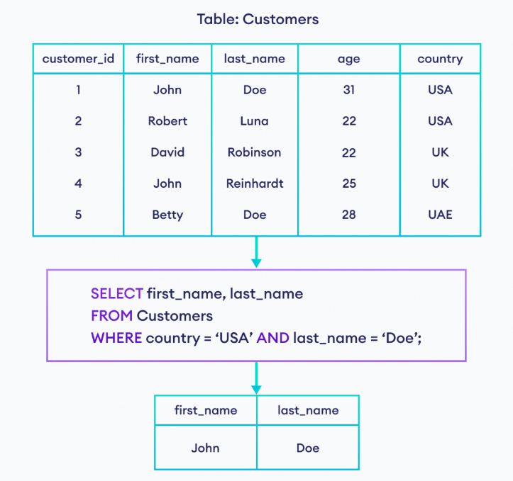
The SQL NOT operator selects data if the given condition is FALSE.
Example
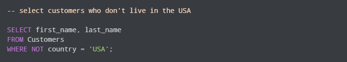
Here, the SQL command selects first_name and last_name of all customers where
the country is not USA from the Customers table.
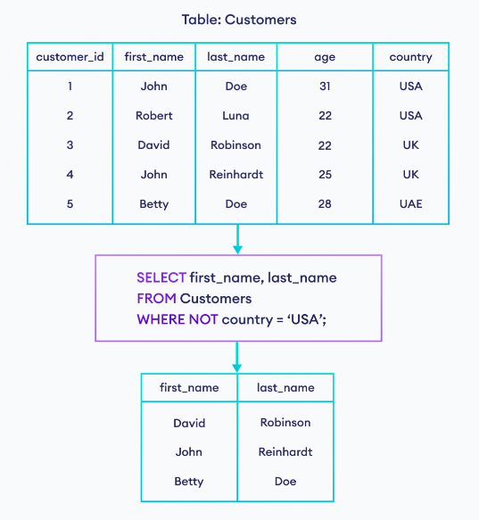
Combing Multiple Operators
It is also possible to combine multiple AND,OR and NOT operators in an SQL statement
For example, let's suppose we want to select customer where country is either USA or UK
and age is less than 26.
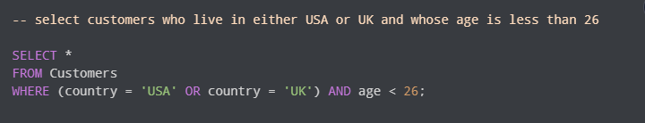
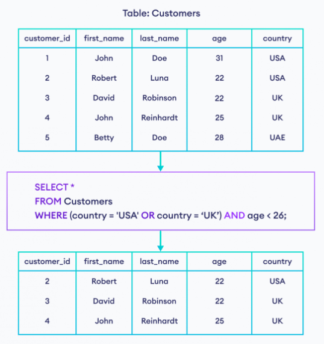
Example: Combinng Multiple Operators in SQL
Let's look at another example of combining operators.
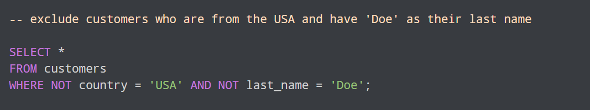
Here, the SQL command selects all customers where the country is
not USA and last_name is not Doe from the Customers table.
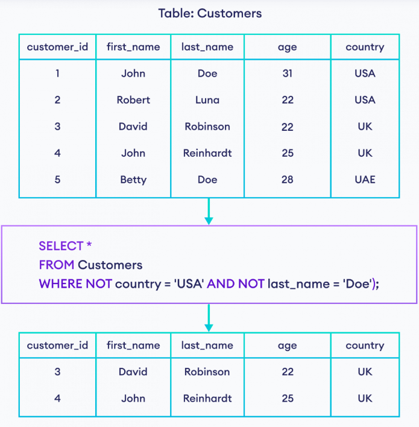
The UPDATE statement is used to modify the existing records in a table
Note: Be careful when updating records in a table! Notice the WHEREclause in
the UPDATE statement. The WHERE clause specifies which record(s) that should be updated.
If you omit the WHERE clause, all records in the table will be updated!
Below is a selection from the Customers table used in the examples:
The following SQL statement updates the first customer (CustomerID = 1) with a new contact person and a new city.
Example
The selection from the "Customers" table will now look like this:
It is the WHERE clause that determines how many records will be updated
The following SQL statement will update the ContactName to "Juan" for all records
where country is "Mexico"
Example
The selection from the "Customers" table will now look like this:
In SQL, the DELETE clause is used to delete row(s) from a database table.
Example
Here, the SQL command will delete a row from the Customer table if its customer_id is 4.
The syntax of the SQL DELETE command is:
Here,
- table_name is the name of the table from which rows are to be deleted
- condition specifies which rows should be deleted
- “[ ]” indicates that the WHERE clause is optional
Delete a Single Row in a table
We can delete a single row in a table using the DELETE command. For example,
Here, the SQL command will delete a row from the Customers table if its customer_id is 5.
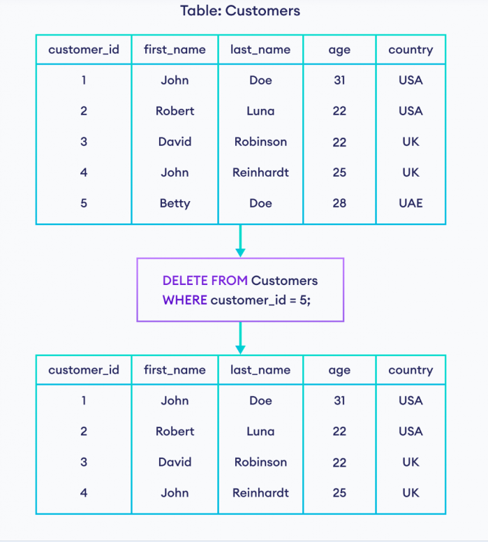
Delete all Rows in a Table
The WHERE clause determines which rows to delete. However, we can delete all rows at once if
we comit the WHERE clause. For example,
Here, the SQL command deletes all rows from the Customers table.
Note: Be careful when you use DELETE. Records may be lost permanently if the database is not
backed up.
We use the SQL LIKE operator with the WHERE clause to get a result set that matches the given
string pattern.
Example
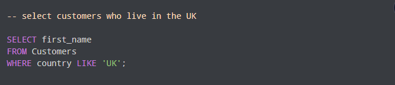
Here, the SQL command selects the first name of customers whose country is UK.
Here,
- column1,column2, ... are the columns to select the data from
- table is the name of the table
- column is the column we want to apply the filter to
- LIKE matches the column with value
- value is the pattern you want to match in the specified column
Here, the SQL command selects the first name of customers whose country is UK.
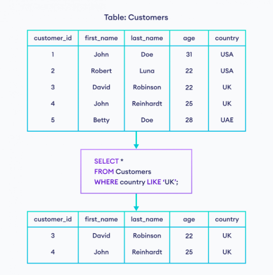
Note: Although the LIKE operator behaves similarly to the = operator in this example, they are not
the same. The = operator is used to check equality, whereas the LIKE operator is used to match
string patterns only.